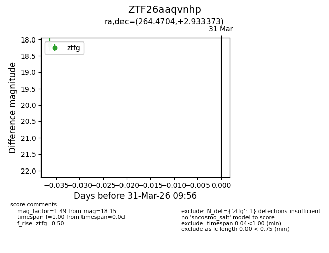
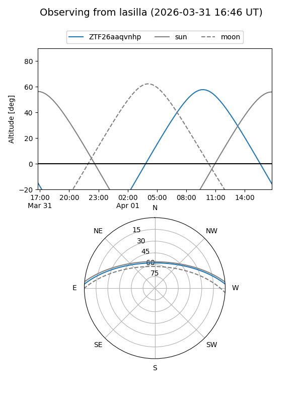
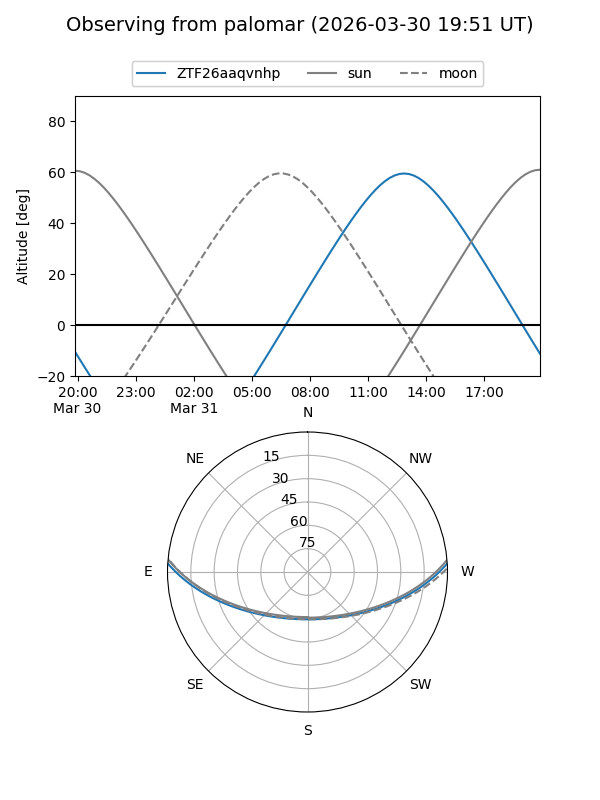

ZTF26aaqvnhp
Target ZTF26aaqvnhp at 2026-03-31 09:59
Aliases and brokers:
FINK: link
Lasair: link
ALeRCE: link
alt names
ZTF26aaqvnhp (ztf,fink_ztf)
Coordinates:
equatorial (ra, dec) = 264.4704,+2.93337
equatorial (HMS+DMS) = 17:37:52.89,+02:56:00.14
galactic (l, b) = (27.0211,+17.68177)
Flags:
Photometry:
last ztfg=18.15
1 ztfg detections
Lightcurve

Visibility


Additional plots